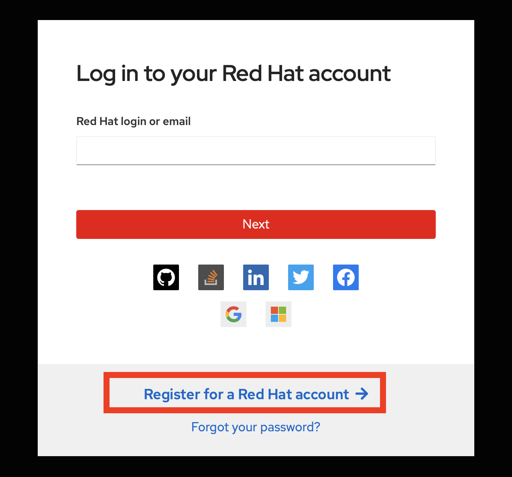
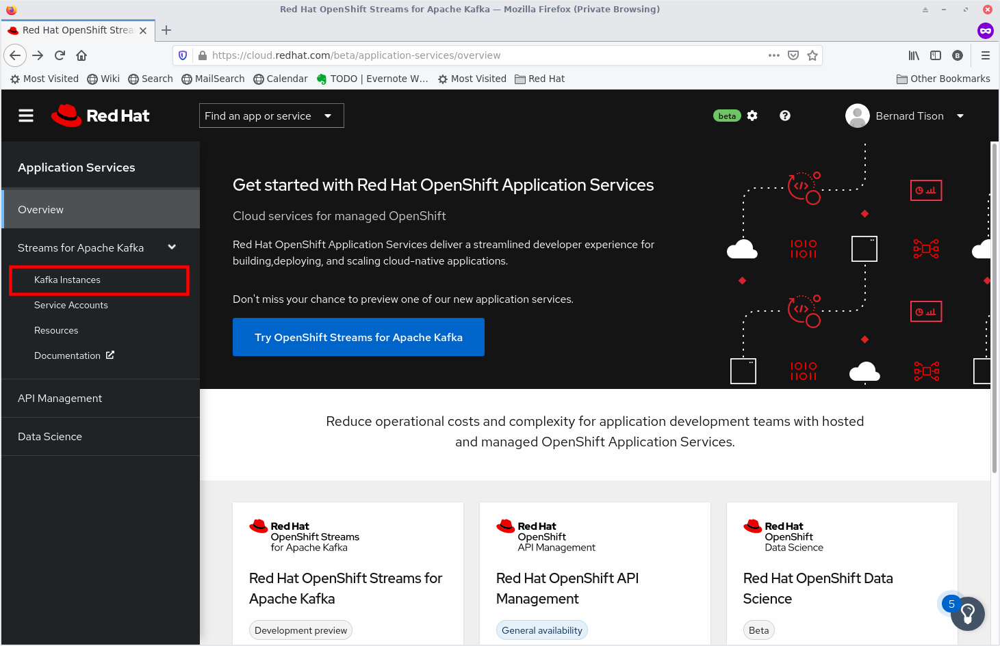
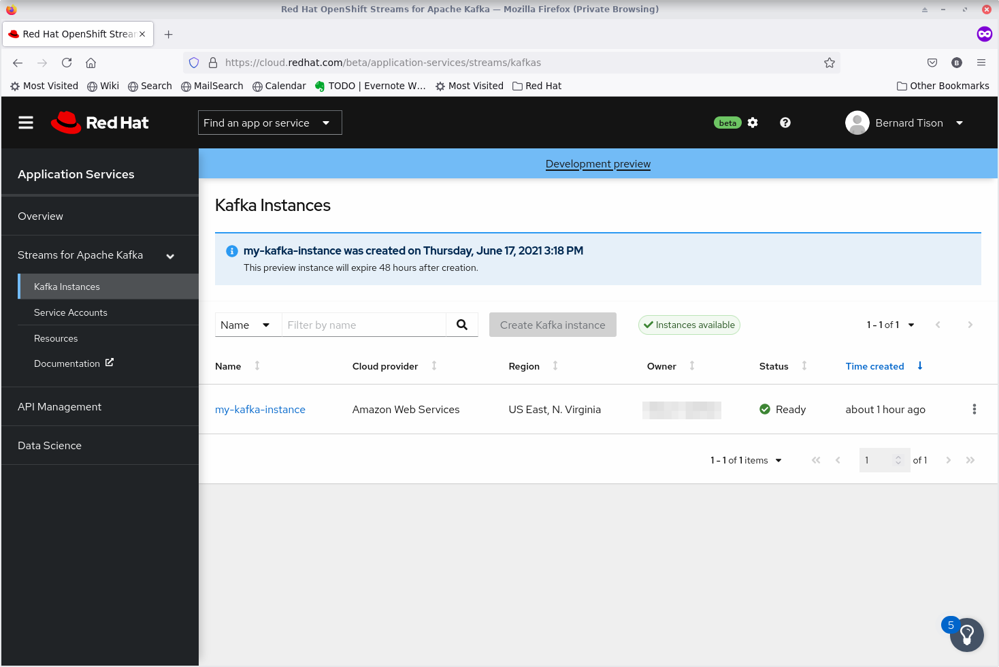
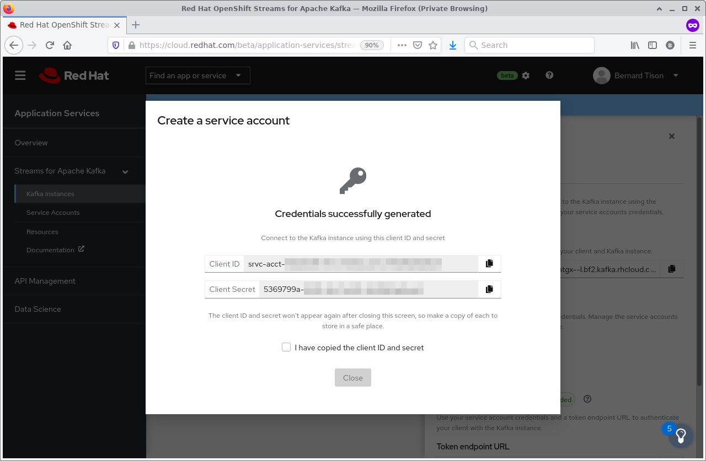
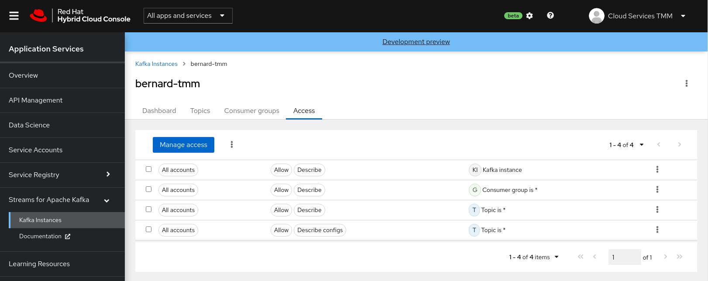
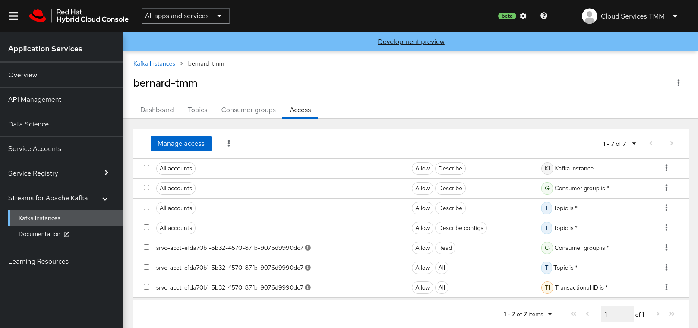
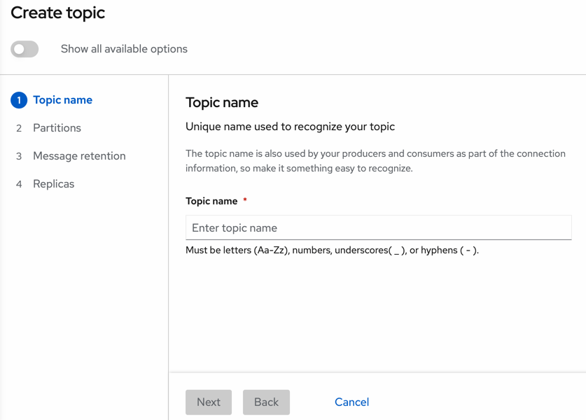

Getting Started with OpenShift Streams for Apache Kafka
As a developer of applications and services, you can use OpenShift Streams for Apache Kafka to create and set up Kafka instances and connect your applications and services to these instances. Streams for Apache Kafka is a managed cloud service that enables you to add Kafka data-streaming functionality in your applications without having to install, configure, run, and maintain your own Kafka clusters.
Create a Red Hat account
You need a Red Hat account to provision a managed Kafka instance. If you don’t have a Red Hat account, this is how you can create one:
-
Go to console.redhat.com.
-
Click the Register for a Red Hat account link to create a Red Hat account.
Be sure to select a Personal account type.
Provision a Kafka instance in OpenShift Streams for Apache Kafka
-
Go to console.redhat.com and log in with your Red Hat account.
-
On the console.redhat.com landing page, select Application Services from the menu on the left.
-
On the Application Services landing page, select Streams for Apache Kafka → Kafka Instances.
 -
On the Kafka Instances overview page, click the Create Kafka instance button. Enter a unique name and select the relevant Cloud region for your Kafka instance and click Create instance. This starts the provisioning process for your Kafka instance.
-
The new Kafka instance is listed in the instances table. After a couple of minutes, your instance should be marked as ready.
 -
When the instance Status is Ready, you can start using the Kafka instance. You can use the options icon (three vertical dots) to view, connect to, or delete the instance as needed.
|
Although you can see Kafka instances created by other users in your organization, you can’t manage those instances. Only the user who creates an instance can edit or delete the instance, setup permissions and create or delete topics. |
Create a Service Account to connect to a Kafka instance
To connect your applications or services to a Streams for Apache Kafka instance, you need to create a service account.
-
On the Kafka Instances overview page, select the Options icon (the three dots) for the Kafka instance you just created. Select View connection information.
-
Copy the Bootstrap server endpoint to a secure location. You will need this when connecting to your Kafka instance.
-
Click Create service account to set up the service account. Enter a unique service account name and an optional description, and click Create.
-
Copy the generated Client ID and Client Secret to a secure location. These are the credentials that you’ll use to connect to this Kafka instance.
The generated credentials are displayed only one time, so ensure that you’ve successfully and securely saved the copied credentials before closing the credentials window.
-
After saving the generated credentials, select the confirmation check box and close the Credentials window.

You’ll use the service account information that you saved to configure your application to connect to your Kafka instances when you’re ready. For example, if you plan to use kcat to interact with your Kafka instance, you’ll use this information to set your bootstrap server and client environment variables.
Set Permissions for a Service Account
After you create a service account to connect to a Kafka instance, you must also set the appropriate level of access for that new account in the Access Control List (ACL) of the Kafka instance. Streams for Apache Kafka uses ACLs provided by Kafka that enable you to manage how other user accounts and service accounts are permitted to interact with the Kafka resources that you create.
-
On the Kafka Instances page, click the name of the Kafka instance you previously created.
-
Click the Access tab to view the current ACL for this instance.
 -
Click Manage access, use the Account drop-down menu to select the service account that you previously created, and click Next.
-
Under Assign Permissions, use the drop-down menus to set the permissions shown in the following table for this service account. Click Add to add each new resource permission.
These permissions enable applications associated with the service account to create and delete topics in the instance, to produce and consume messages in any topic in the instance, and to use any consumer group and any producer.
Table 1. Example ACL permissions for a new service account Resource type
Resource identifier and value
Access type
Operation
TopicIs=*AllowAllConsumer groupIs=*AllowReadTransactional IDIs=*AllowAll -
After you add these permissions for the service account, click Save to finish.
Create a Kafka Topic in OpenShift Streams for Apache Kafka
After you create a Kafka instance, you can create Kafka topics to start producing and consuming messages in your services.
-
In the Kafka Instances page of the web console, click the name of the Kafka instance that you want to add a topic to.
-
Select the Topics tab, click Create topic, and follow the guided steps to define the topic details. Click Next to complete each step and click Finish to complete the setup.

-
Topic name: Enter a unique topic name, such as
my-first-kafka-topic. -
Partitions: Set the number of partitions for this topic. This example sets the partition to 1 for a single partition. Partitions are distinct lists of messages within a topic and enable parts of a topic to be distributed over multiple brokers in the cluster. A topic can contain one or more partitions, enabling producer and consumer loads to be scaled.
You can increase the number of partitions later, but you cannot decrease them. -
Message retention: Set the message retention time and size to the relevant value and increment. The default retention time is set to
A weekand the retention size toUnlimited. Message retention time is the amount of time that messages are retained in a topic before they are deleted or compacted, depending on the cleanup policy. Retention size is the maximum total size of all log segments in a partition before they are deleted or compacted. -
Replicas: For this release of Streams for Apache Kafka, the replicas are preconfigured. The number of partition replicas for the topic is set to
3and the minimum number of follower replicas that must be in sync with a partition leader is set to2. Replicas are copies of partitions in a topic. Partition replicas are distributed over multiple brokers in the cluster to ensure topic availability if a broker fails. When a follower replica is in sync with a partition leader, the follower replica can become the new partition leader if needed.
-
After you complete the topic setup, the new Kafka topic is listed in the topics table. You can now start producing and consuming messages to and from this topic using services that you connect to this instance.